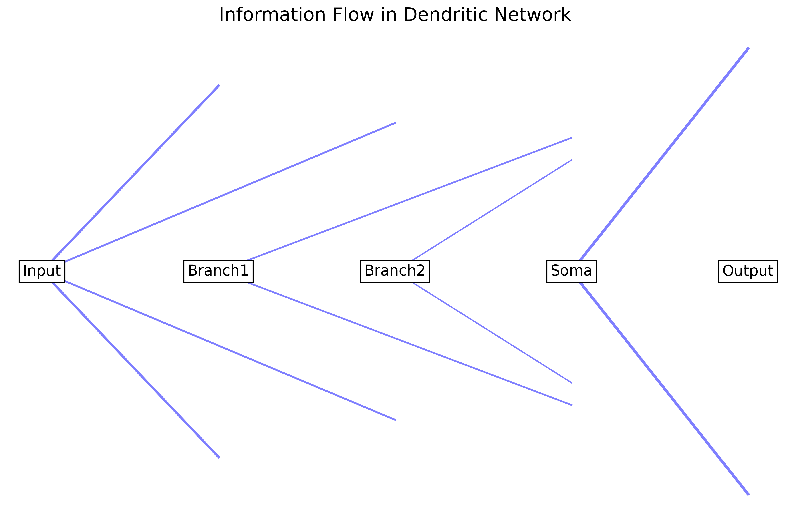

Analysis Tools and Methods#
The Dendritic Modeling Framework provides a comprehensive suite of analysis tools to understand network behavior, information processing, and biological realism. This section covers all available analysis methods from basic performance metrics to advanced information-theoretic measures.

Figure 9 Analysis Toolkit: Comprehensive tools for understanding dendritic computation from performance metrics to information flow analysis.#
Overview#
The analysis framework is organized into several categories:
Performance Analysis: Accuracy, loss, convergence metrics
Information-Theoretic Analysis: Mutual information, conditional MI, PID
Ablation Studies: Systematic component removal and analysis
Noise Robustness: Perturbation analysis and robustness testing
Synaptic Analysis: Weight distributions, turnover, plasticity
Visualization: Network activity, connectivity, and dynamics
Analysis Configuration Framework#
All analysis tools follow a unified configuration structure:
analysis:
# Enable during training or post-hoc
training: true # Run analysis during training
post_training: true # Run analysis after training
# Performance analysis
performance_analysis:
enabled: true
metrics: ["accuracy", "loss", "auc"]
# Information-theoretic analysis
information_analysis:
enabled: true
method: "kraskov" # or "copula", "gaussian"
compute_mi: true
compute_cmi: true
compute_pid: true
# Ablation studies
ablation_analysis:
enabled: false # Computationally expensive
ablation_types: ["layer", "branch", "connection"]
# Output settings
output_dir: "./analysis_results"
save_raw_data: true # Save raw analysis data
generate_plots: true # Generate visualization plots
This unified framework allows researchers to: - Run comprehensive analysis with single configuration - Compare analysis results across different models - Systematically study network properties - Generate publication-ready figures
Performance Analysis#
Basic performance metrics and convergence analysis.
Standard Metrics#
analysis:
performance_analysis:
enabled: true
metrics:
- "accuracy" # Classification accuracy
- "precision" # Precision score
- "recall" # Recall score
- "f1_score" # F1 score
- "auc" # Area under ROC curve
- "loss" # Training/validation loss
- "perplexity" # For language models
Regression Metrics:
metrics:
- "mse" # Mean squared error
- "mae" # Mean absolute error
- "r2" # R-squared
- "explained_variance" # Explained variance score
Advanced Performance Analysis#
Learning Curves:
performance_analysis:
learning_curves: true
smoothing_window: 10 # Smooth over 10 epochs
compare_train_val: true # Plot both training and validation
Convergence Analysis:
performance_analysis:
convergence_analysis: true
convergence_threshold: 0.001 # Threshold for convergence detection
patience: 20 # Epochs to wait for convergence
Statistical Significance:
performance_analysis:
statistical_tests: true
confidence_interval: 0.95 # 95% confidence intervals
bootstrap_samples: 1000 # For bootstrap CI
Information-Theoretic Analysis#
Advanced analysis of information processing in dendritic networks.


Figure 10 Information Flow in Dendritic Networks: Visualization of mutual information flow from inputs through dendritic branches to the soma and output, showing how information is processed and integrated.#
Mutual Information (MI)#
Measures the amount of information shared between variables.
analysis:
information_analysis:
enabled: true
compute_mi: true
# MI estimation methods
mi_method: "kraskov" # or "copula", "gaussian"
mi_k_neighbors: 3 # For k-NN estimation
# Variables to analyze
mi_variables:
- "input_output" # I(Input; Output)
- "layer_activations" # I(Layer_i; Layer_j)
- "excitatory_inhibitory" # I(Excitatory; Inhibitory)
- "branch_soma" # I(Branch; Soma)
Interpretation: - Higher MI indicates stronger information coupling - Used to study information flow through the network - Can reveal bottlenecks and redundancies
Conditional Mutual Information (CMI)#
Information shared between variables given a third variable.
information_analysis:
compute_cmi: true
cmi_conditioning_variables:
- "previous_layer" # I(X; Y | Previous_Layer)
- "inhibitory_activity" # I(X; Y | Inhibitory)
cmi_method: "kraskov"
cmi_k_neighbors: 3
Applications: - Study direct vs. indirect information paths - Understand the role of inhibition in information processing - Analyze hierarchical information flow
Partial Information Decomposition (PID)#
Decomposes information into unique, redundant, and synergistic components.
information_analysis:
compute_pid: true
pid_method: "williams_beer" # or "ince", "griffith"
# PID target and sources
pid_target: "output"
pid_sources:
- "excitatory_pathway"
- "inhibitory_pathway"
PID Components: - Unique Information: Information only in one source - Redundant Information: Information in both sources - Synergistic Information: Information only when both sources combined
Research Applications: - Understanding E/I cooperation vs. competition - Studying dendritic integration mechanisms - Analyzing multi-branch information processing
Information Dynamics#
How information processing changes over time and training.
information_analysis:
information_dynamics: true
dynamics_frequency: 10 # Compute every 10 epochs
track_variables:
- "layer_information_flow"
- "branch_information_content"
- "synaptic_information_transfer"
Advanced Information Measures#
Transfer Entropy: Directed information flow
information_analysis:
transfer_entropy: true
te_lag: 1 # Time lag for transfer entropy
te_variables:
- source: "layer_1"
target: "layer_2"
Information Bottleneck: Compression vs. prediction trade-off
information_analysis:
information_bottleneck: true
ib_beta_range: [0.1, 1.0, 10.0] # Different compression levels
Ablation Studies#
Systematic removal of network components to understand their contributions.
Layer Ablation#
Remove or silence entire layers to study their importance.
analysis:
ablation_analysis:
enabled: true
ablation_types: ["layer"]
layer_ablation:
ablation_method: "zero" # "zero", "noise", "remove"
layers_to_ablate: [0, 1, 2] # Layer indices
noise_std: 0.1 # For noise ablation
Ablation Methods: - Zero: Set layer outputs to zero - Noise: Replace with random noise - Remove: Skip layer entirely
Branch Ablation#
Study the contribution of individual dendritic branches.
ablation_analysis:
ablation_types: ["branch"]
branch_ablation:
ablation_method: "lesion" # "lesion", "silence", "noise"
branches_per_layer: [2, 4, 8] # Branches to ablate per layer
ablation_percentage: 0.25 # Ablate 25% of branches
Connection Ablation#
Remove specific connections to study connectivity importance.
ablation_analysis:
ablation_types: ["connection"]
connection_ablation:
connection_types: ["ee", "ei", "ie"] # Connection types to ablate
ablation_strategies:
- "random" # Random connection removal
- "weakest" # Remove weakest connections
- "strongest" # Remove strongest connections
removal_percentages: [0.1, 0.25, 0.5]
Systematic Ablation Studies#
ablation_analysis:
systematic_study: true
study_design:
- name: "depth_study"
variable: "layer_depth"
values: [1, 2, 3, 4, 5]
- name: "width_study"
variable: "layer_width"
values: [32, 64, 128, 256]
Noise Robustness Analysis#
Test network robustness to various forms of noise and perturbations.
Input Noise Robustness#
analysis:
noise_perturbation_analysis:
enabled: true
input_noise:
noise_types: ["gaussian", "uniform", "salt_pepper"]
noise_levels: [0.1, 0.2, 0.3, 0.4, 0.5]
gaussian_noise:
mean: 0.0
std_range: [0.05, 0.5]
uniform_noise:
low: -0.2
high: 0.2
Weight Perturbation#
noise_perturbation_analysis:
weight_perturbation: true
weight_noise:
perturbation_types: ["additive", "multiplicative"]
noise_levels: [0.01, 0.05, 0.1, 0.2]
# Target specific weight types
weight_targets: ["excitatory", "inhibitory", "dendritic"]
Adversarial Robustness#
noise_perturbation_analysis:
adversarial_robustness: true
adversarial_attacks:
- "fgsm" # Fast Gradient Sign Method
- "pgd" # Projected Gradient Descent
- "c_w" # Carlini & Wagner
epsilon_values: [0.01, 0.05, 0.1]
Synaptic Analysis#
Detailed analysis of synaptic weights and plasticity.
Weight Distribution Analysis#
analysis:
weight_analysis:
enabled: true
distributions: true
distribution_plots: ["histogram", "kde", "qq_plot"]
# Analyze different weight types separately
weight_categories:
- "excitatory_weights"
- "inhibitory_weights"
- "dendritic_weights"
- "feedforward_weights"
Synaptic Turnover Analysis#
Track how synaptic connections change during training.
analysis:
synaptic_turnover_analysis:
enabled: true
turnover_metrics:
- "formation_rate" # New synapse formation
- "elimination_rate" # Synapse elimination
- "stability_index" # Connection stability
- "weight_dynamics" # Weight change over time
tracking_frequency: 10 # Track every 10 epochs
threshold_formation: 0.1 # Threshold for new synapse
threshold_elimination: 0.01 # Threshold for elimination
Synaptic Activation Analysis#
analysis:
synaptic_activation_analysis:
enabled: true
activation_metrics:
- "firing_rates" # Average activation rates
- "burst_patterns" # Temporal patterns
- "correlation_structure" # Cross-correlations
- "sparsity_measures" # Activation sparsity
Advanced Synaptic Measures#
synaptic_activation_analysis:
advanced_measures: true
# Measure synaptic efficacy
efficacy_analysis: true
efficacy_window: 100 # Time window for efficacy calculation
# Analyze synaptic competition
competition_analysis: true
competition_metrics: ["winner_take_all", "soft_competition"]
Branch Activation Analysis#
Specific analysis of dendritic branch activity patterns.
Branch Activity Patterns#
analysis:
branch_activation_analysis:
enabled: true
activity_patterns:
- "spatial_patterns" # Activity across branch tree
- "temporal_patterns" # Activity over time
- "stimulus_selectivity" # Response to different inputs
- "integration_patterns" # How branches combine inputs
Branch Information Processing#
branch_activation_analysis:
information_processing: true
branch_mi_analysis: true # MI between branches
branch_integration_analysis: true # How branches integrate
branch_competition_analysis: true # Competition between branches
Comparative Analysis Tools#
Tools for comparing different models, configurations, or training runs.
Model Comparison#
analysis:
comparative_analysis:
enabled: true
compare_models:
- model_path: "results/einet_run/"
label: "EINet"
- model_path: "results/mlp_run/"
label: "MLP"
comparison_metrics:
- "performance"
- "information_measures"
- "robustness"
- "efficiency"
Hyperparameter Analysis#
comparative_analysis:
hyperparameter_sweep: true
sweep_parameters:
- parameter: "learning_rate"
values: [0.001, 0.01, 0.1]
- parameter: "batch_size"
values: [32, 64, 128]
sweep_metrics:
- "final_accuracy"
- "convergence_speed"
- "information_flow"
Biological Realism Assessment#
Evaluate how well the networks capture biological properties.
Biological Metrics#
analysis:
biological_realism:
enabled: true
realism_metrics:
- "dale_principle_adherence" # E/I separation
- "activation_distributions" # Biological firing patterns
- "connectivity_patterns" # Realistic connectivity
- "learning_dynamics" # Bio-plausible learning
- "energy_efficiency" # Metabolic considerations
Neural Coding Analysis#
biological_realism:
neural_coding: true
coding_schemes:
- "rate_coding" # Firing rate information
- "temporal_coding" # Spike timing information
- "population_coding" # Population vector coding
- "sparse_coding" # Sparse representation
Integration with Experimental Data#
biological_realism:
experimental_comparison: true
experimental_data:
- dataset: "allen_institute"
measures: ["firing_rates", "connectivity"]
- dataset: "blue_brain"
measures: ["morphology", "physiology"]
Analysis Output and Reporting#
Comprehensive output formats for analysis results.
Output Formats#
analysis:
output_formats:
- "json" # Machine-readable results
- "csv" # Tabular data
- "hdf5" # Large numerical arrays
- "matplotlib" # Static plots
- "plotly" # Interactive plots
output_organization:
by_analysis_type: true # Organize by analysis category
by_timestamp: true # Include timestamps
compress_large_files: true # Compress large outputs
Report Generation#
analysis:
report_generation:
enabled: true
report_formats: ["html", "pdf", "jupyter"]
include_figures: true
include_raw_data: false
custom_sections:
- "executive_summary"
- "detailed_results"
- "methodological_notes"
- "future_directions"
Integration with Weights & Biases#
analysis:
wandb_integration:
enabled: true
log_frequency: 10 # Log every 10 epochs
log_media: true # Log plots and figures
log_artifacts: true # Log analysis artifacts
custom_charts:
- "information_flow_over_time"
- "branch_activity_heatmap"
- "weight_distribution_evolution"
Performance Considerations#
Optimizing analysis for different scales.
Computational Efficiency#
analysis:
performance_optimization:
# Limit analysis scope for large models
max_samples: 10000 # Subsample for large datasets
analysis_frequency: 20 # Run every 20 epochs
# Parallel processing
num_workers: 8 # Parallel analysis workers
batch_analysis: true # Batch processing
# Memory management
streaming_analysis: true # Stream large analyses
checkpoint_frequency: 100 # Save intermediate results
Selective Analysis#
analysis:
selective_analysis:
# Only run expensive analyses occasionally
expensive_analyses: ["ablation", "full_pid"]
expensive_frequency: 100 # Every 100 epochs
# Quick analyses every epoch
quick_analyses: ["performance", "basic_mi"]
quick_frequency: 1
Best Practices#
Analysis Workflow#
Start with basic performance metrics
Add information-theoretic analysis gradually
Use ablation studies to understand mechanisms
Test robustness with noise analysis
Compare against biological data
Interpretation Guidelines#
Information Theory Results: - Higher MI doesn’t always mean better performance - Consider both absolute values and relative changes - PID results need careful interpretation - Always validate with multiple methods
Ablation Study Results: - Consider interaction effects between components - Test multiple ablation strategies - Validate with independent test data - Consider compensatory mechanisms
Common Pitfalls#
Over-interpreting noisy estimates: Use confidence intervals
Ignoring multiple comparisons: Apply appropriate corrections
Confusing correlation with causation: Use careful experimental design
Insufficient sample sizes: Ensure adequate data for reliable estimates
Next Steps#
Explore specific analysis methods:
Performance metrics: Start with performance
Information theory: Deep dive into information_theory
Understanding mechanisms: Try ablation_studies
Robustness testing: Explore noise_robustness
Synaptic dynamics: Study synaptic_analysis
See also
Training Strategies and Usage - Training strategies for different analysis goals
../visualization/index - Visualizing analysis results
../configuration/index - Complete analysis configuration options